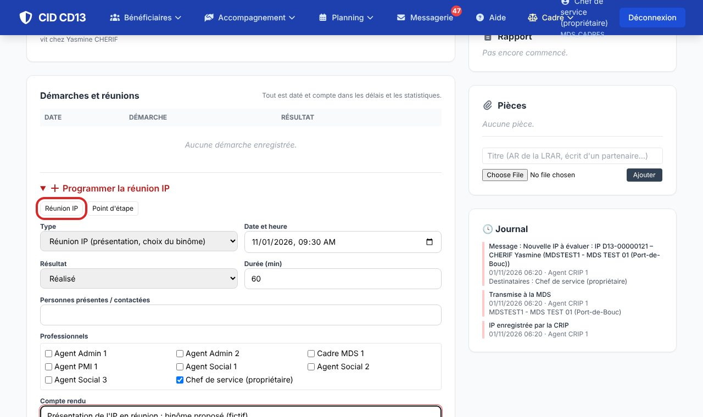
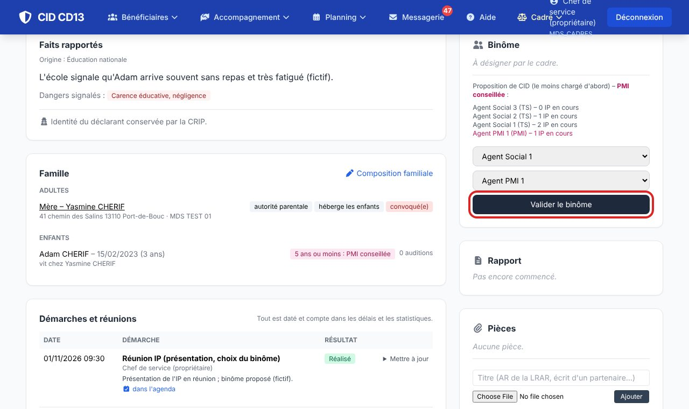
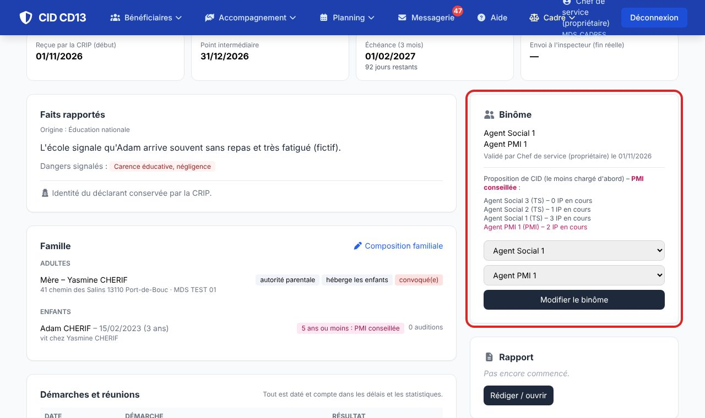

1Enregistrer la réunion IP

- Ouvrez l'IP (message CID ou liste des IP). Dans Démarches et réunions, cliquez sur Réunion IP.
- Indiquez la date, le résultat, les personnes et professionnels présents et le compte rendu, puis enregistrez. La réunion peut s'inscrire dans l'agenda.
- Tout est daté et compte dans les délais et les statistiques.
2Désigner le binôme


- CID propose un binôme : les travailleurs sociaux les moins chargés d'abord, et un professionnel de PMI quand il est conseillé (enfant de 5 ans ou moins, situation particulière).
- Choisissez les deux professionnels et cliquez sur Valider le binôme.
- Les deux professionnels reçoivent un message ; l'IP passe en Évaluation en cours. Le binôme reste modifiable.
Bon à savoir
- L'évaluation dure 3 mois à compter de la réception par la CRIP, avec un point intermédiaire : les dates s'affichent en haut de l'IP, et CID envoie des rappels au cadre.
- Le cadre peut aussi enregistrer les points d'étape et les réunions de synthèse dans les démarches.
Et ensuite ?
Cliquez sur une image pour l'agrandir. Le cadre rouge montre où cliquer ou quoi remplir. Toutes les données affichées sont fictives.